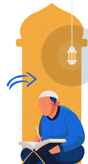

Membaca Al-Qur’an, tapi nggak paham isinya
Menghafal Al-Qur’an, tapi nggak bertahan lama
Punya Hafalan Al-Qur’an, tapi nggak berpengaruh ke kehidupan
Ingin memahami Al-Qur’an, tapi bingung mulai dari mana
Solusi bagi kamu yang ingin meningkatkan kualitas ber-Qur’an

Menjadi muslim yang lebih kritis
Lebih pro-aktif
Punya Lebih peka terhadap kondisi saat ini
Dapat lingkungan pertemanan yang mendukung perjalanan kamu dalam memahami Al-Qur’an